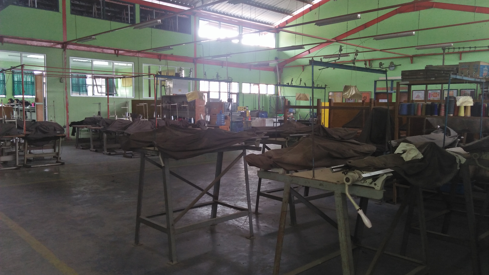
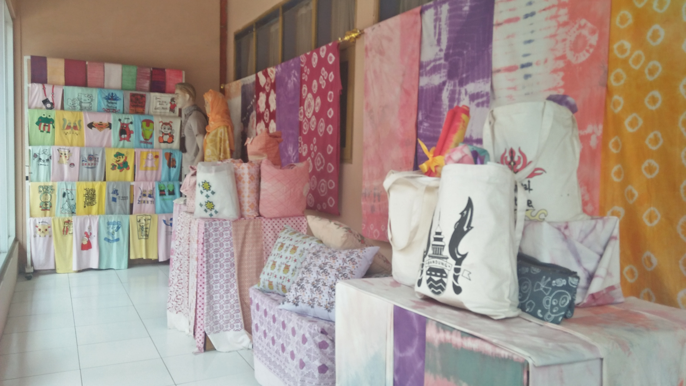

SEJARAH TEKSTIL

jurusan tekstil berdiri sejak sekolah SMKN 1 katapang berdiri yaitu pada tahun 1999
dan hanya membuka 2 kelas belajar saja tiap angkatan nya dan memiliki Akrediritasi A sejak dibuka hingga saat ini.
PENGERTIAN TEKSTILE
Tekstil adalah material fleksibel yang terbuat dari tenunan benang , tekstil dibentuk dengan cara penyulaman, penjahitan, pengikatan, dan cara pressing , istilah tekstil dalam pemakaiannya sehari-hari sering disamakan dengan istilah kain
Namun ada sedikit perbedaan antara dua istilah ini, tekstil dapat digunakan untuk menyebut bahan apapun yang terbuat dari tenunan benang, sedangkan kain merupakan hasil jadinya, yang sudah bisa digunakan

COPYRIGHT BY XI RPL 1